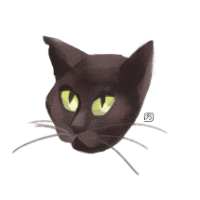

|  | Sriwon SinghaGraphic Designer I'm Study Web Developer and work as Graphic Designer Visit my website |
Works among the team in the production I have to Create material for promotion to print online and offline.
Developed artwork and layout for print and digital signage, banner, poster artwork like stage, backdrop, standee, display is also in my area of work.
Key visual events start with a briefing from the marketing team and a concept from the creative designer then work with a producer in the production team to printout or make a mockup for a client